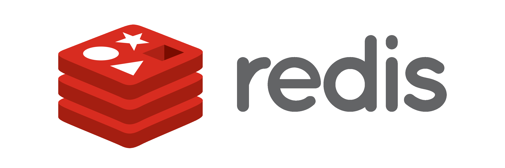

Redis Introduction and Installation

This writing is actually a draft note made for myself, so that I myself don’t forget what I had learned. But I think this note will be helpful for those who want to learn Redis.
1. Introduction to Redis
Redis is an acronym for Remote dictionary server. It’s an open source, in-memory and persistent key-value database / store which stores data as key-value pairs and also doubles up as a message broker. Redis supports a wide array of data structures including sets, lists, hashes, strings, HyperLogLogs and so many more.
What is a key-value pair?
A key-value pair is a set or pair of two linked items. Consider the following:
car = Mercedes
In this case, car is the key and Mercedes is the value. In a Redis database, this information can be written using the syntax:
1
SET "key1" "value1"
Our example will translate to:
1
SET "car" "Mercedes"
1.1. Benefits of using Redis
-
Unlike relational databases like MySQL, Redis is a NoSQL database that stores data as a key value pair. This makes it simple and flexible as there’s no need of creating any tables , columns and rows which are associated with relational databases. Feeding data to Redis is simple and straightforward.
-
One of the apparent uses of Redis is its use as a caching system. While it does so, it also offers persistence to data being written on it.
-
The in-memory architecture of Redis makes it super-fast in storage and retrieval of data.
-
The redis cache system is quite robust and has the capacity of withstanding failures and interruptions.
-
Redis ships with a Master-Slave replication feature. When changes are made to the master node, they are automatically replicated on the slave nodes to ensure high availability.
-
Redis has the ability to store large key & value pairs of up to 512 MB.
-
Given its small footprint, Redis can be installed in IoT devices such as Raspberry Pi and Arduino to support IoT apps.
-
Redis is a cross-platform database and caching system which can be installed in Windows , mac and Linux.
2. Installation
2.1. Install Redis on CentOS 8
2.1.1. Update system repositories
Login to your CentOS 8 / RHEL 8 system and update system packages and repositories using the command:
1
$ sudo dnf update -y
2.1.2. Install Redis with dnf
Redis version 5.0.x is now included in CentOS 8 AppStream repository and installing it is a walk in the park. Simply run the command:
1
$ sudo dnf install redis -y
সংস্থাপন সম্পন্ন হলে নিচের কমান্ডটি চালিয়ে রেডিসের সংস্করণটি যাচাই করতে পারবেন:
Once installed, you can verify the version of Redis installed by running the command:
1
2
[arafat@server ~]$ rpm -q redis
redis-5.0.3-2.module_el8.2.0+318+3d7e67ea.x86_64
আউটপুট থেকে, এটি স্পষ্ট যে আমরা রেডিস সংস্করণ ৫.০.৩ সংস্থাপন করেছি। রেডিসের সংস্করণ, আর্কিটেকচার, লাইসেন্স এবং সংক্ষিপ্ত বিবরণ পেতে এই কমান্ডটি চালান:
From the output , it is clear that we have installed Redis version 5.0.3. To retrieve more information about Redis such as the version, architecture, license and a brief description, run the command:
1
$ rpm -qi redis
রেডিস চালু করতে সিস্টেম কনট্রোল দিয়ে রেডিস চালু করতে হবে।
To start Redis:
1
$ sudo systemctl start redis
প্রতি সিস্টেম বুটে স্বয়ংক্রিয়ভাবে রেডিস চালু করতে চাইলে সিস্টেম কনট্রোলে রেডিস সক্ষম করতে হবে:
If you want to automatically start Redis in each system boot, you need to enable Redis:
1
$ sudo systemctl enable redis
রেডিসের অবস্থা:
To see status:
1
$ sudo systemctl status redis
ডিফল্টভাবে, রেডিস ৬৩৭৯ পোর্টে চালিত হয়। netstat আদেশ চালিয়ে এটি নিশ্চিত হওয়া যাবে:
By default, Redis runs on port 6379. This can be confirmed by running the netstat command:
1
$ sudo netstat -pnltu | grep redis
3. Configure Redis
3.1. Allow Remote Access
The default installation only allows connections from localhost or Redis server and blocks any external connections. We are going to configure Redis for remote connection from a client machine.
Access the configuration file as shown:
1
$ sudo vim /etc/redis.conf
Locate the bind parameter and replace 127.0.0.1 with 0.0.0.0
1
bind 0.0.0.0
Save and close the configuration file. For the changes to come into effect, restart Redis.
1
$ sudo systemctl restart redis
To log in to Redis shell, run the command:
1
$ redis-cli
Try to ping redis server. You should get a ‘PONG’ response as shown.
1
2
3
4
[arafat@server ~]$ redis-cli
127.0.0.1:6379> ping
PONG
127.0.0.1:6379>
3.2. Securing Redis Server
Our Redis setup allows anyone to access the shell and databases without authentication which poses a grave security risk. To set a password, head back to the configuration file /etc/redis.conf
Locate and uncomment the requirepass parameter and specify a strong password.
1
2
3
4
5
6
7
8
9
10
11
12
13
14
================================== SECURITY ===================================
# Require clients to issue AUTH <PASSWORD> before processing any other
# commands. This might be useful in environments in which you do not trust
# others with access to the host running redis-server.
#
# This should stay commented out for backward compatibility and because most
# people do not need auth (e.g. they run their own servers).
#
# Warning: since Redis is pretty fast an outside user can try up to
# 150k passwords per second against a good box. This means that you should
# use a very strong password otherwise it will be very easy to break.
#
# requirepass foobared
Restart Redis and head back to the server.
1
$ sudo systemctl restart redis
If you attempt to run any command before authenticating, the error shown below will be displayed
1
2
3
4
[arafat@server ~]$ redis-cli
127.0.0.1:6379> ping
(error) NOAUTH Authentication required.
127.0.0.1:6379>
To authenticate, type ‘auth’ followed by the password set.
1
auth 'PASSWORD'
Thereafter, you can continue running your commands.
1
2
3
4
5
6
[arafat@server ~]$ redis-cli
127.0.0.1:6379> auth 'PASSWORD'
OK
127.0.0.1:6379> ping
PONG
127.0.0.1:6379>
To come out from redis-cli, type exit
3.2.1. Configuring the Firewall for Redis
Lastly, we need to configure the firewall to allow remote connections to the Redis server. To do this, we need to open the redis port which is 6379.
So, run the commands below.
1
2
$ sudo firewall-cmd --add-port=6379/tcp --permanent
$ sudo firewall-cmd --reload
To access Redis remotely, use the syntax below.
1
$ redis-cli -h REDIS_IP_ADDRESS
Next authenticate and hit ‘ENTER’
The IP address of our Redis server is 192.168.1.5 The command from another client PC will be
1
$ redis-cli -h 192.168.1.5
Next, provide the password and hit ‘ENTER’
1
auth 'PASSWORD'
3.3. How to perform Redis Benchmark
Redis comes with a built-in tool known as redis-benchmark that gives insights on the system’s performance statistics such as data transfer rate, throughput and latency to mention a few.
Some of the command options you can use with Redis include
-
-n: This defines the number of requests to be made. The default is 100000 -
-c: Defines the number of parallel connections to be simulated. By default, this value is 50 -
-p: This is the Redis port which by default is 6379 -
-h: Used to define the host. By default, this value is set to localhost (127.0.0.1) -
-a: Used to prompt for a password if the server needs authentication -
-q: Stands for quiet mode. Displays the average requests made per second -
-t: Used to run a combination of tests -
-P: Used for pipelining for enhanced performance. -
-d: Specifies the data size in bytes for GET and SET values. By default, this is set to 3 bytes
Examples:
To confirm the average no. of requests that your Redis server can handle run the command:
1
$ redis-benchmark -q